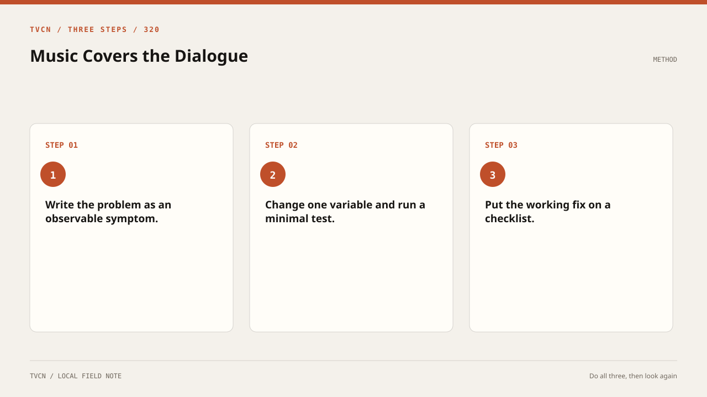

On set
Lower the music by 6 dB and ask whether it is needed at all. Dialogue first.
Do this
Music over dialogue: drop the music six dB first, then ask whether the scene needs it at all.
- Solo the dialogue and confirm every word is audible.
- Lower the music six to ten dB under dialogue, or use sidechain and automation.
- If it still masks words, cut the music and let room tone carry the scene.
Avoid
Do not fill every silence with music; quiet is also rhythm.
Three-step flow

Three causes
For “Music Covers the Dialogue”, check three directions first. Change one variable, record a 30-second comparison, and see which link the change follows.
| Cause | Signal on set | Five-minute test |
|---|---|---|
| Music too full | The score stays at one level and dialogue has no space | Drop music 6dB between lines |
| Frequency collision | Music midrange overlaps speech and blurs words | Clear 1–4kHz for dialogue |
| No automation | The whole cue sits at one level, so climax and quiet hit the same | Draw a level curve per scene |
On-set diagnosis
- Solo dialogue and confirm every word is clear without subtitles.
- Solo music and check whether it keeps pushing between lines.
- Play both and listen for buildup around 1–4kHz.
Fix
Music supports emotion; it does not cover lines. Make dialogue intelligible first, then decide where the cue enters and leaves.
- Automate music down 3–6dB under dialogue and let it return between lines.
- Make a broad, shallow EQ dip around 1–4kHz to clear space for speech.
- Keep ambience; do not fill the location with music.
- Leave a no-music gap before the climax so the entrance has force.
Failure cases
With “Music Covers the Dialogue”, these three moves make it worse. Pick one replacement action and do not change three variables at once.
| Failure | Why it gets worse | Replace with |
|---|---|---|
| Lower the whole cue | The music loses shape and the emotion flattens | Automate instead of a single static cut |
| Mute the music | The scene dries out and the audience hears the technique | Drop to -18dB rather than silence |
| Only change level | The frequency collision remains | Use EQ and level together |
Acceptance table
Acceptance is not “it feels better”; all four must be identifiable, playable and logged.
| Check | Pass line | Log |
|---|---|---|
| Dialogue | Every word is clear without subtitles | Solo dialogue |
| Music | It yields between lines and enters at the climax | Inspect automation |
| Frequency | No pile-up at 1–4kHz | Solo and full mix |
| Ambience | The room is not completely covered by music | Listen for space |
One line for the set
Solo the dialogue first; music only earns its place when every word is clear.
Image note. Covers, diagrams and step images on this page are editorial illustrations or structure diagrams, not photographs of a test performed here; they are not evidence of measured gear performance. Where an image is AI-assisted, the caption says so. Read the test conditions in the text before treating an image as proof.